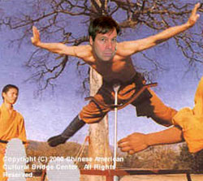

Paul Boutin’s boo-boos
A post from our favorite carefree technology reporter Paul Boutin had fairly wide linkage over the past week, How to fight with other bloggers. What he means is “how to fight with bloggers, whether you’re just another lame blogger or a superstar journalist like me and Jack Shafer,” but that’s nit-picking.
Noblesse oblige
His first “rule” harkens back to the pre-revolutionary French monarchy in its advice: honorably ignore your inferiors.
Jack Shafer at Slate sets the example. He goes after TV news and the big newspapers and magazines… But you don’t see Jack stooping [Boutin, you’re disgusting] to single out the individual foibles of small-town papers, or harping on bloggers with 150,000 daily readers. That would seem petty and one-sided. No, Jack only spars with the entire blogosphere at once.

I’m pretty sure that Shafer didn’t pioneer this technique; he’s just doing the blindingly obvious in choosing not to analyze the Omaha World-Herald.
And excuse me but, this fact is wrong: Boutin says Shafer only attacks the “entire blogosphere at once.” To the contrary, he often goes after Gawker and Wonkette specifically. (And they fight back, hilariously ripping him to shreds. But whatevs, Boutin likes to imagine Shafer balancing shirtless on a spoon, so we’ll leave it there.)
Aside from being patronizing , this “rule” is self-serving. The less that popular publications talk about smaller ones, the less readers are aware of their options. Everyone knew this before the Internet, and possibly even the printing press. But maybe some Boutin-in-training will find the tip helpful.
Do as I say…
Rule 2: Stick to the arguments you know.
Jeff Jarvis and Nick Denton can credibly accuse newspaper staffers of playing specific games with the truth because they’ve been party to those games themselves. You haven’t.
Holy shit. I can’t believe people are uncritically linking to this post. What are Boutin’s j-credentials, again? The tech beat? For Slate? It’s an online magazine, you deluded egotist. I work in damn online publishing too, as do tens of thousands of other people. We’re as much the real deal as Slate ever was. And we’re not some pitiful sycophant of first Microsoft and now the WP. We make money.
So if you see a post about, say, the new MacBook that you know is wrong, just correct the facts about the laptop. Don’t extrapolate about the writer’s agenda or biases. Don’t turn your post into an ethics essay.
This scares me into thinking Boutin has written some uninformed crap about the MacBook that, if I found it, would leave me angry and distracted for another two days.
I think I see what has happened here. There’s an unfortunate, boring habit among tech fanboys of going after the “press” in general every time their beloved product is criticized. They make some off-base accusations, giving Boutin the opportunity to dismiss their arguments.
But let’s go back to the source of the problem: flatly wrong information in widely read stories. That is what gets the kids pissed off, and they have every right to be so. Boutin’s indifference to being caught red-handed is all the more infuriating.
And it isn’t just a bunch of Mac kiddies that have found factual fault in Boutin’s writing. His airy musings on theoretical physics sure didn’t sit well with this Harvard physicist:
In this text, I want to demonstrate that Paul Boutin has no idea what he is talking about in his text at Slate – he is writing about theoretical physics – and why he is an example of people who know absolutely nothing but who want to influence absolutely everything.
It doesn’t matter / everyone does it.
It’s obvious that Boutin doesn’t think that inaccuracies are important, and that people who find them unethical just don’t understand the industry. Historically, he’s got a point.
A few weeks after I started my current job, I found a number of errors in window-dressing French phrases in an already-run story. I thought they were heinous, and took them to a French-speaking editor expecting her to be embarrassed. First, she didn’t see the errors. I pointed them out. She quickly corrected them in the archives, and that was that. No horror, no shock.
Fine. That is the way that things were and are. But publishing is changing. As much as newspapers shed crocodile tears over the “unedited” and possibly wrong information spread by weblogs, a good weblog written by an expert on a subject will provide far more reliable information than an uniformed career reporter’s work, particularly in a publishing backwater like computer technology.
The rest of us are learning to get the correct information we want from weblogs we trust. Until newspapers and magazines (online and off) learn to assign an expert editor to every story touching on technology and similarly complicated subjects, they will not be able to stem the tide.
The strange thing about Boutin is that despite the trail of factual dead bodies he’s left behind, Web people who matter seem to like him. (This will guarantee him gigs forever.) He’s tight with engadget. He has lunch with Cory Doctorow. And this is what Mark Pilgrim had to say:
He’s a very cool guy, although he doesn’t think of himself that way, which makes him even cooler…. Anyway, Paul is cool, and we talked about lots of stuff.
Great. He’s “cool.” I guess I should be glad he hasn’t charmed John Gruber. (Exposing antipathy to the facts in technology reporting is Daring Fireball’s bread and butter, so that would be quite a feat.)
Obviously we’re not going to be rid of this guy. So here’s my challenge to Paul Boutin, which I’m sure he will not “stoop” to answer: follow your own second commandment. “Stick to the arguments you know.”
Every story, particularly a critical one, is an argument. So if it’s not a subject you know (e.g. theoretical physics, Apple products) you’ll either have to refrain from criticism or ask for help. It would save the rest of us a lot of trouble “fighting” you.
Add a comment